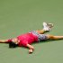
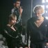
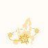
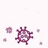
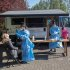
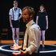
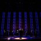
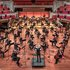
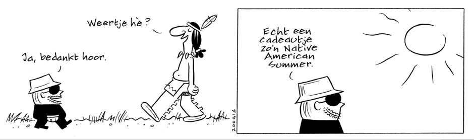

Live: Gouverneur Nevada boos op Trump-campagne | Aantal besmettingen neemt harder toe
Nieuws
Studie naar oude coronavirussen: eind dit jaar golf van herbesmettingen mogelijk
Nieuws
Meer



Verenigd Rusland aan kop bij lokale verkiezingen, maar oppositie wint in Siberië
Japanse regeringspartij kiest Yoshihide Suga als opvolger van premier Shinzo Abe
Thiem knokt zich uit geslagen positie naar eerste grandslamtitel op US Open
Greenpeace sleept Nederlandse staat voor rechter om staatssteun KLM
Amerikaanse media: Bytedance sluit TikTok-deal met Oracle
Vier jonge acteurs maken samen kans op Louis d'Or: een unicum
InterviewAudrey Beckers
De verslaafde arts die verslavingsarts werd: 'Ik vond dat ik 80 uur per week moest werken'
Column
Sylvia Witteman
Ik ben geen boomer, maar ik woon wél in dat verfoeide, felbegeerde Amsterdam
Best gelezen
Meer
1
2
3
Democratie betekent helemaal niet dat alle meningen gehoord moeten worden
Sophie (3) vertelt iets verontrustends over de kinderopvang. En dan gaat er van alles mis
Corona versnelt leegloop uit kerk met bijna tien jaar. De vraag die nu gonst is: 'Zijn we nu niet alles kwijt?'
InterviewSalo Muller. 'Kwelgeest' van de NS
'Ik wilde een vergoeding die de NS een beetje pijn doet'
ReportagePowerbank
Bloedplasma doneren bij de Powerbank was nog nooit zo makkelijk
Column
Teun van de Keuken
Dankzij Hugo de Jonge zitten we nu weer zonder de middelen die we nodig hebben
NieuwsTour de France
Op de Grand Colombier zakken juist de Colombiaanse berggeiten door het ijs
Nieuws
&
Achtergrond
AchtergrondKerkbezoek
Corona versnelt leegloop uit kerk met bijna tien jaar. De vraag die nu gonst is: 'Zijn we nu niet alles kwijt?'
ReportageLesbos
Vluchtelingen op Lesbos willen niet opnieuw in een kamp, ook al is het splinternieuw
Coronavirus



Data wereldwijdCijfers over het coronavirus in alle landen op een rij
DossierEen handig overzicht van de belangrijkste zaken rondom het coronavirus
DataDe belangrijkste grafieken en kaarten over corona in Nederland
DataNog op vakantie? Dit is de situatie in de landen waar u heen mag
AchtergrondAcht grafieken die het verhal van een halfjaar corona het beste vertellen
NieuwsTestbeleid corona in gevaar door tekorten
AnalyseEen tweede golf lijkt afgeslagen, maar we weten nog lang niet alles over de grillen van het coronavirus
NieuwsBosbranden VS
Zeker dertig doden en veel desinformatie bij branden Amerikaanse westkust
NieuwsAkwasi
OM: Geen vriendjespolitiek officie van justitie die besloot Akwasi niet te vervolgen
Columns
&
Opinie
OpinieLeo Lucassen
Kom boven megafoon van populisten uit en zorg voor humaan asielbeleid
OproepNederland in gesprek
Kunnen we de dialoog weer op gang brengen? Doe mee met Nederland in gesprek en breek uit uw bubbel
Column
Sander Schimmelpenninck
Democratie betekent helemaal niet dat alle meningen gehoord moeten worden
GastcolumnYarin Eski
Universitair docent Yarin Eski: 'De universiteit is dood'
Column
Bert Wagendorp
Zet de geldpers maar aan, het inflatiespook is een wit wief
Uitgelicht
Reconstructie
Sophie (3) vertelt iets verontrustends over de kinderopvang. En dan gaat er van alles mis
DesignPublieksjury
Stemmen op de 10 kanshebbers van de Hema-ontwerpwedstrijd
Volkskrant magazine
Dit weekend: Sigrid Kaag, Merlijn Kamerling en de Hema-ontwerpwedstrijd
NieuwsquizWeek 37
CO2-uitstoor, de Nigeriaanse mensenhandel en Rineke Dijkstra: test je kennis met de nieuwsquiz
Wetenschap
De nieuwste cijfersGeluk
In welke landen zijn de mensen het gelukkigst, en in welke het ongelukkigst?
Column
Joost Zaat
Een voorhuid is geen overbodig velletje, blijf ervanaf
WetenschapLeven scheppen
De knutselwezens komen eraan: hoe wetenschappers aan nieuw leven werken
WetenschapOceaanonderzoek
De nieuwe oceanauten: hoe miljardairs met een filantropische vloot de wetenschap beïnvloeden
NieuwsOntstoken hartspier
Hartschade topsporters na corona-infectie, onderzoek onder meer patiënten volgt
Mensen
Dit ben ikJamie Mutsaers (7)
'In Barcelona kan ik Messi ontmoeten. Dat is de beste voetballer ter wereld'
Zinvol levenLucas van der Rhee
Leven met een genetische hartafwijking: 'Er niet over praten maakt de dood alleen maar angstaanjagender'
Column
Aaf Brandt Corstius
Bij het Tikibad was alles dicht, behalve het Tikibad
Column
Japser van Kuijk
Om ergens te aarden moet je er kennelijk niet alleen wonen, maar vooral ook leven
InterviewMinister Sigrid Kaag
'Het lijkt soms net alsof ik een eeuwige inburgeringscursus moet doen'
De Gids
De GidsStudentenleven
Studeren tijdens een pandemie: zo wint Netflix het niet van de studieboeken
De GidsWerk & Huishouden
Coronacrisis geen effect op rolverdeling: zo verdeel je de taken in huis wél gelijk
De GidsReorganisatie
Harder werken als er een reorganisatie aankomt? Slecht plan
Van cryptotot kruiswoord
De puzzels uit de krant nu ook online
De GidsCarrièreswitch
Van bètawetenschap naar filmmaker: 'Opnieuw studeren was zwaar'
Cultuur
&
Media
InterviewStephen Jones
Dat Prinsjesdag hoedeloos gaat verlopen is jammer, leert de beroemdste hoedenmaker ter wereld
NieuwsStreetartmuseum
Hoe het misliep tussen de initiatiefnemers van het enorme streetartmuseum
Recensies
Meer



GamerecensieVoor een computerspel over superhelden heeft Marvel's Avengers wel erg weinig spierballen ★★☆☆☆
TheaterrecensieWunderbaum brengt in 'Work harder' fraaie scènes over de genadeloze prestatiemaatschappij ★★★☆☆
KlassiekAcht leden van het Nederlands Kamerkoor zingen Lux in tenebris, licht in de duisternis. Hypnotiserend en intens ★★★☆☆
TheaterrecensieMarie Louise Stheins is fenomenaal in relatiedrama Skylight ★★★☆☆
RecensieHet Radio Filharmonisch en het Groot Omroepkoort vierden hun 75-jarig bestaan met een vindingrijk programma
TV-recensie
Emma Curvers
De vraag of kindmodellen als Summer (11) worden uitgebuit, blijft altijd boven tafel hangen
PostuumTerence Conran (1931-2020)
Terence Conran was een designrevolutionair, maar ook een superzuinige knorrepot
SigmundPeter de Wit
Foto
FotografieBloot
Amateurnaaktfoto's die bijna vergeten werden
Economie
De OndernemingCommonland
De mens verpest overal ter wereld de natuur. Deze boer wil het tij keren
Winnaar & verliezerFraser & Christine Lagarde
Fraser pakt een kans, Christine Lagarde verspeelt er een
InterviewWerkgeversvoorzitter Hans de Boer
'Deze voorzitter moet niet te beroerd zijn om tussen die mannen in te staan'
Sport
NieuwsGroningen - PSV
Uitval Arjen Robben overschaduwt treffen met PSV
InterviewOom Jos van Aert
De Nederlandse roots van wielrenner Wout van Aert: 'Het is van Aert met een kleine v'
NieuwsFormule1
Na 20 seconden is het duidelijk op Mugello: Verstappen wordt niet de jongste F1-kampioen ooit
WedstrijdverslagSparta - Ajax
Blind is terug, Antony scoort - heus, met winnend Ajax gaat het zo beroerd nog niet
NieuwsUS Open
Naomi Osaka heeft zichzelf hervonden en laat dat ook zien in de eindstrijd van de US Open